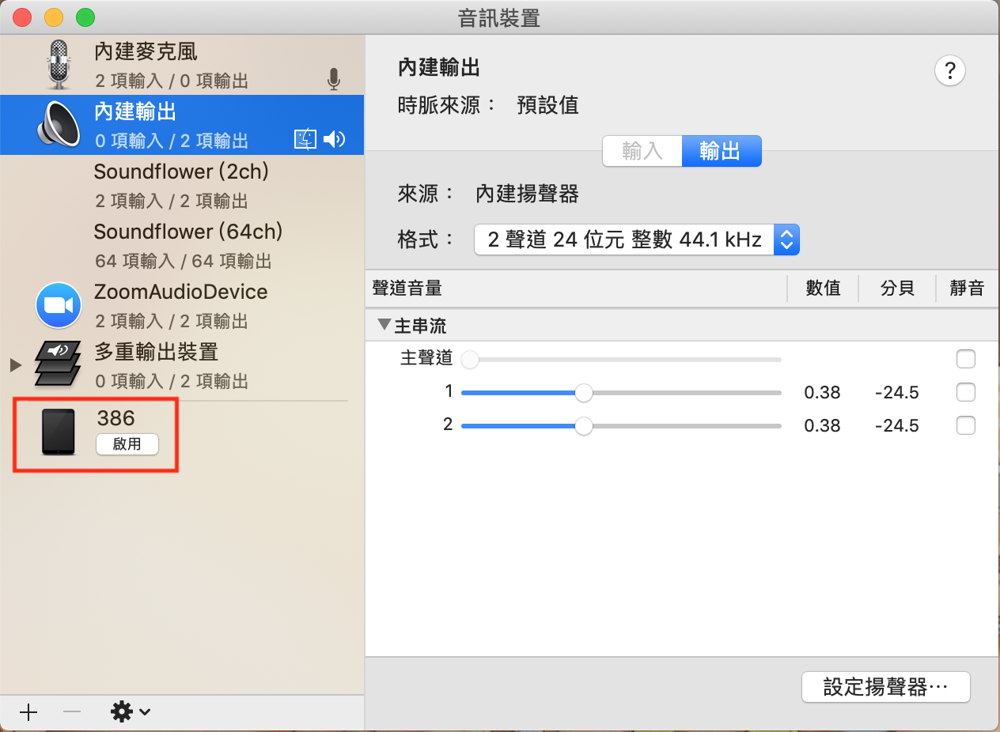
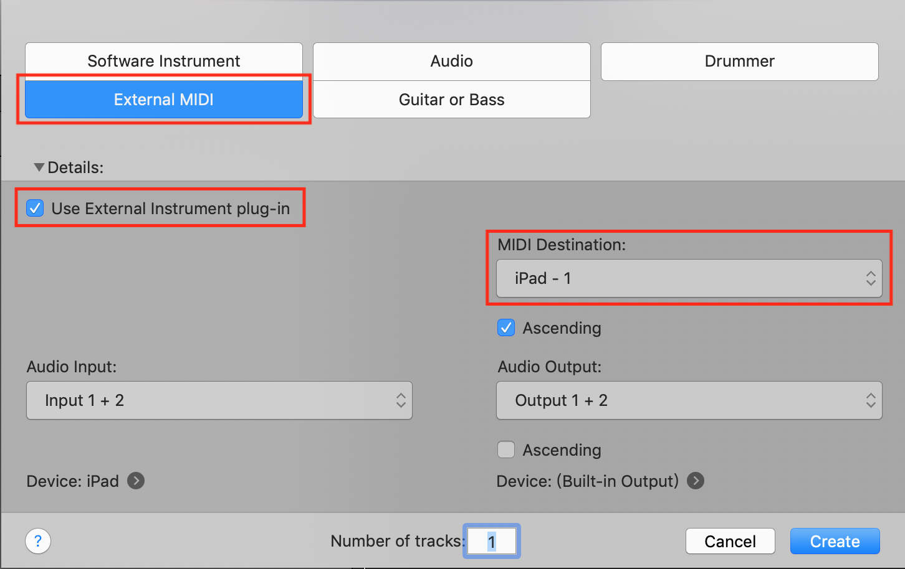
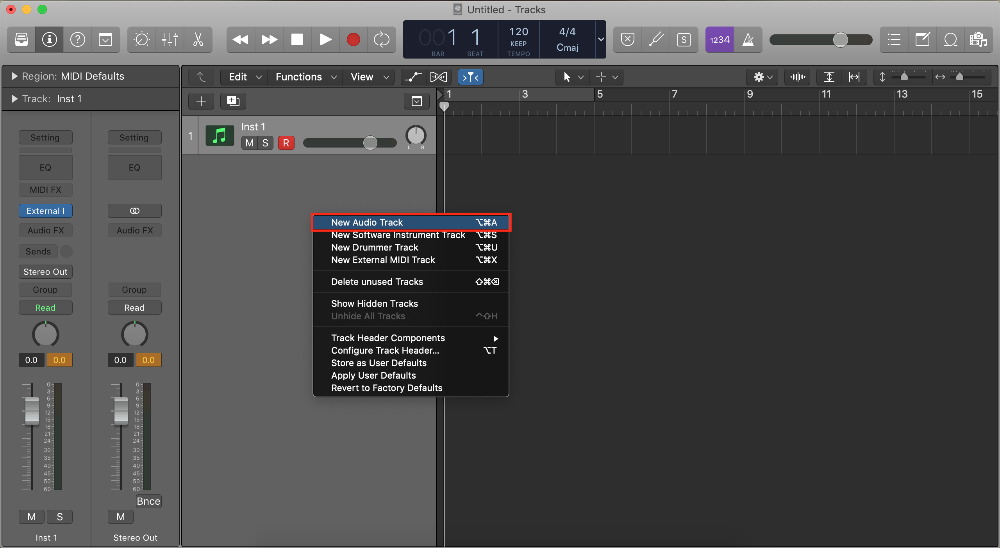
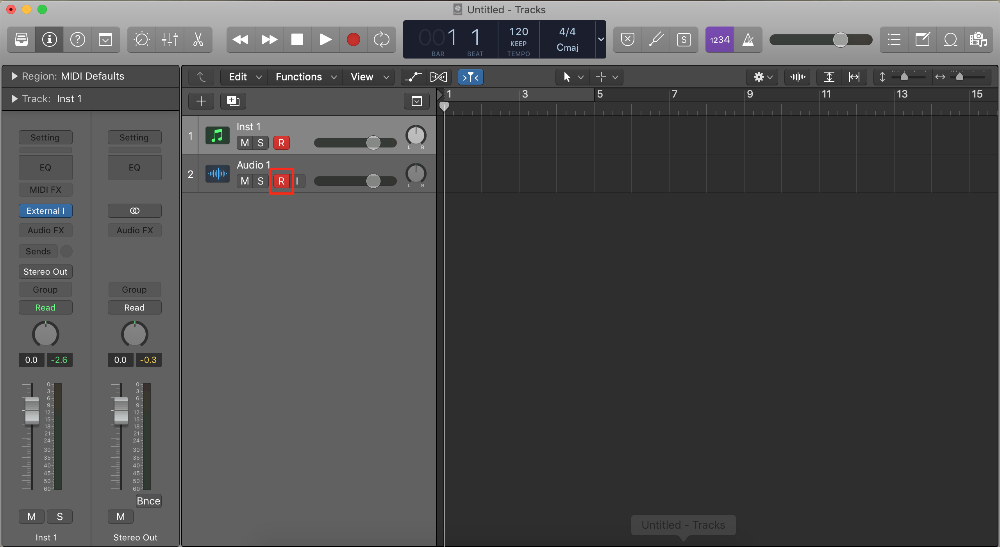
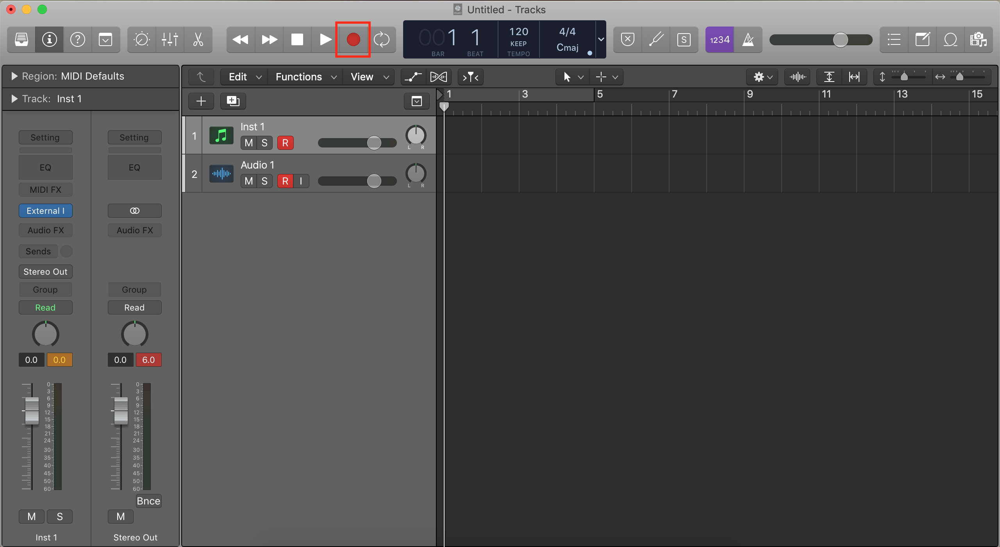
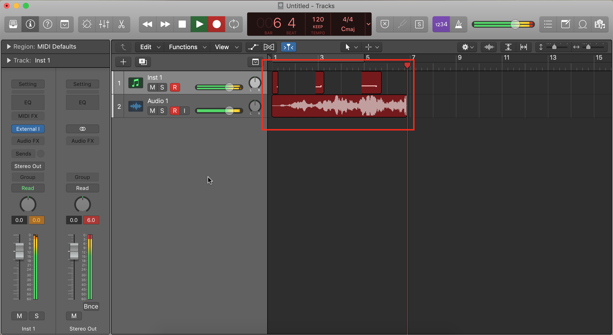
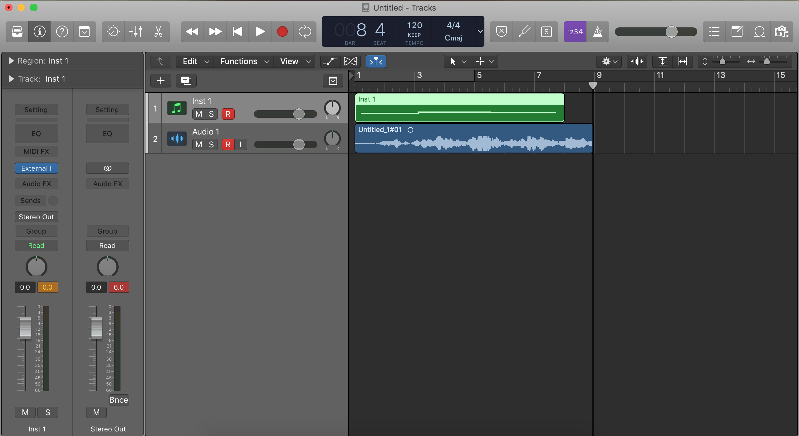
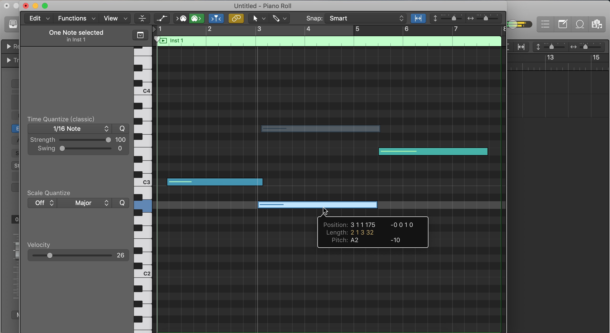
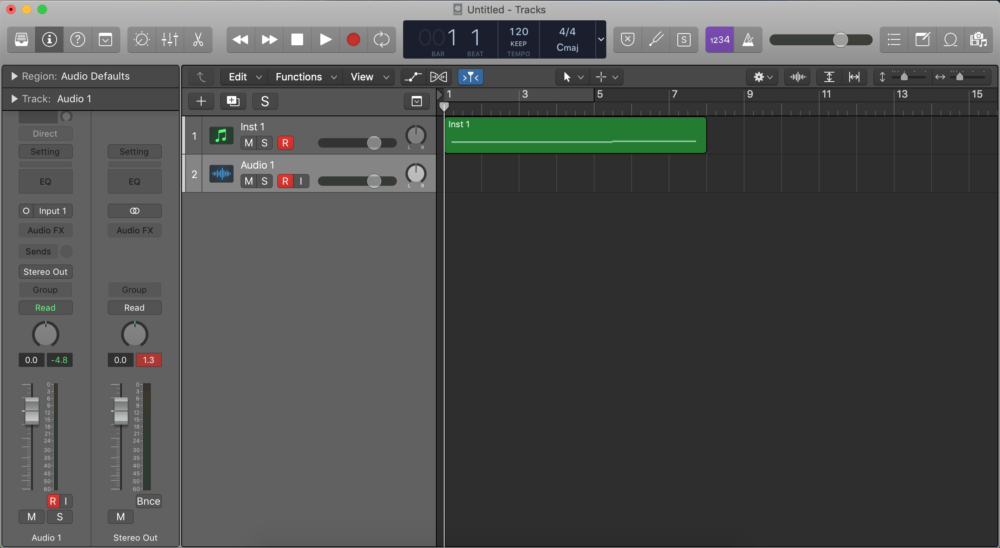

以 iPad 為例，用條列步驟的方式簡單分享給大家～
兩者連起來！
- 在 iPad 上下載《AudioKit Synth One Synthesizer》
- 用 USB 線，將 iPad 連接到 MacBook
- 打開 MacBook 的「音訊 MIDI 設定」，左側會看到自己的 iPad，點按「啟用」

- 打開 Synth One，然後先放著
- 打開 Logic Pro，開啟新專案時，新增一個「External MIDI」track
- 「Use External Instrument plug-in」記得勾起來
- MIDI Destination 選 iPad

- 這時，彈奏 Synth One 上的 keyboard 就能在 Logic Pro 上聽到聲音了呢！
怎麼錄起來？
- 在 Logic Pro 上新增一個 Audio Track（也可以直接 option+command+A 來新增）

- 滑鼠游標點按 Inst 1 那一軌，點按後會呈現如圖的偏白灰底，「R」也會跟著紅起來。
但 Audio 1 那一軌的「R」不會，我們需要手動點按它來開啟它，待會會需要！
- （非必要）如果有 MIDI 鍵盤可以接起來，等等可以用它來彈奏
- 按 Record，此時可以開始你的彈奏了。

在彈奏的過程中，你會發現不只是 MIDI，連 audio 也同時被錄進去啦！
- 停止 Record 後，就會這樣：

- 既然都有 audio 了，為何還需要 MIDI 啊？因為這樣才可以修改呀！
（對你想要修改的那一軌按 command+4 可以打開如圖的 Piano Roll）
- 除了邊彈奏邊錄 audio 之外，也可以用「播放現有 MIDI 軌」的方式來錄呢！
怎麼做？滑鼠游標換成點按 Audio 1 那一軌，讓它呈現如圖的偏白灰底，然後再開始 Record，神奇的事就會發生囉～
這樣就大功告成啦😎